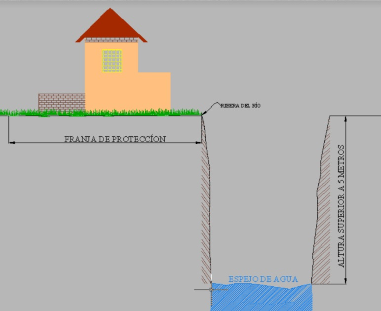
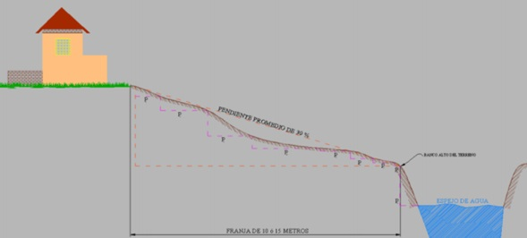
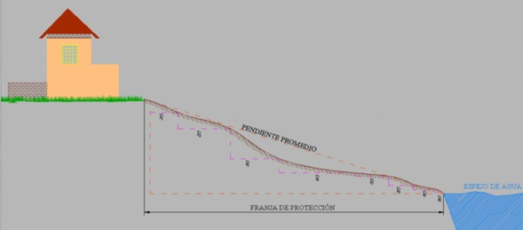
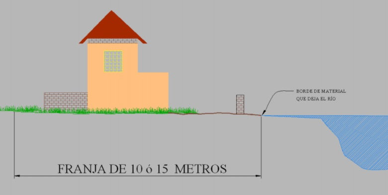

| Número de caso | Ejemplo |
|---|---|
| 1. Cuando el cauce del río es en forma de cañón. |  |
| 2. Cuando el cauce esta definido y el terreno es quebrado. |  |
| 3. Cuando no está definido el cauce y el terreno es quebrado. |  |
| 4. Zonas planas sin cauce de río definido. |  |